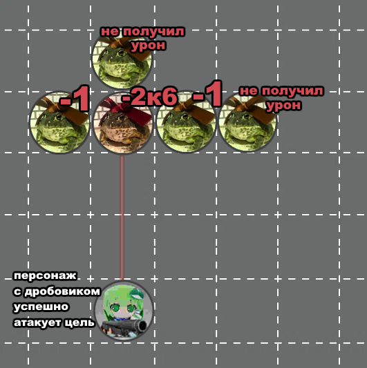

Дробовики — тип дальнобойного оружия, который работает по особым механикам при использовании. Однако эти особые механики не применяются на дробовики, заряженные жаканами.
1. При совершении дальнобойных атак дробовиками вы сами выбираете, какой модификатор использовать при совершении бросков атаки и урона — модификатор Силы или Ловкости. Для обоих бросков должен использоваться один и тот же модификатор.
2. При успешном попадании дальнобойней атакой дробовиком по цели, существа в соседних по горизонтали клетках от этой цели также гарантированно получат фиксированное количество урона.
Соседними считаются клетки которые напрямую контактируют с клеткой, в которой находится цель. Горизонталью считается направление, перпендикулярное прямой между Атакующим и Целью. За количество этого урона отвечает отдельная характеристика "Урон разброса". Если урон разброса не указан, то значение всегда равно 1.